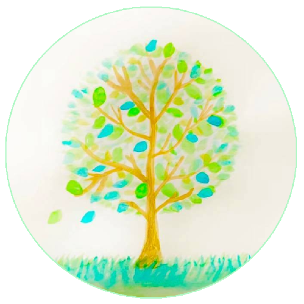

理由を問わない一時預かり
本八幡駅周辺で、3時間程度の一時預かりを中心にご相談いただけます。リフレッシュ目的でも大丈夫です。

こあそび〈coasobi〉 子育て支援・子育てコミュニティActivities
本八幡駅周辺で、3時間程度の一時預かりを中心にご相談いただけます。リフレッシュ目的でも大丈夫です。
手遊び、絵本の読み聞かせ、子育てのお話し会、フリータイムなど、親子でゆるやかにつながる場です。
Zoomで、子育てのことや日々の気持ちをお話しできます。1時間1,000円でご相談いただけます。
For First Visitors
こあそびは、保護者が「ちゃんとした理由」を用意しなくても頼れる場所を目指しています。 家事、通院、仕事、リフレッシュ、ひとりで少し落ち着きたい時間など、理由はそれぞれで大丈夫です。
Temporary Childcare
本八幡駅周辺で、子育て支援センターなどを利用して行うことが多い活動です。
お出かけができるようになったお子さまから小学生のお子さままでを中心にご相談ください。
1時間 1,000円
ご希望に合わせて、現金、イチコ、ことら送金、振り込み（振込手数料は利用者さま負担）でお支払いいただけます。
千葉県市川市 本八幡駅周辺
子育て支援センターを利用することが多いです。
不定期で、3時間程度の預かりを中心にご相談ください。
空き状況や予約済みの予定は、カレンダー・Instagram・Threadsでお知らせします。
フリーランス協会の損害賠償保険に加入しています。
認可外保育施設として登録しています。
保護者のリフレッシュも大切な理由です。預ける理由を無理に説明する必要はありません。
Flow
利用したい内容、希望日時、気になることをお知らせください。
本八幡駅周辺で、無理のない形を一緒に確認します。
必要な範囲で、体調や過ごし方などを確認します。
別日の事前面談をご希望の場合は、オンラインZoomで30分 500円です。お支払いはイチコ、ことら送金、振り込み（振込手数料は利用者さま負担）でお願いします。
別日の事前面談を希望しない場合は、お預かり当日に予約時間内で短く面談します。この場合は一時預かり料金のみです。
体調や持ち物を確認し、予定の時間までお預かりします。
当日の様子を共有し、利用者さまのご希望の方法でお支払いいただきます。
Events
ニコット八幡市民交流館で、手遊び、絵本の読み聞かせ、子育てのお話し会、フリータイムなどを行います。 木曜日10時から11時の開催が多いですが、違う日時になることもあります。
近い月齢のお子さまを育てる保護者同士で、ゆるやかにつながれる時間です。 「近所にママ友がほしい」「同じくらいの子と過ごしてみたい」というときにもご参加ください。
Schedule
イベント日時、一時預かりの空き状況、予約済み予定をカレンダーでお知らせします。 InstagramとThreadsでも最新のお知らせを発信します。
GoogleカレンダーのURLを設定すると、ここに予定が表示されます。
Safety
保育士、元幼稚園教諭、ベビーシッターなど、保育の経験をもとに活動しています。
フリーランス協会の損害賠償保険に加入しています。万が一の際は、保険の範囲内で対応します。
認可外保育施設として登録しています。詳細はご利用前のご案内で確認できます。
体調不良やけがの際は保護者へ連絡し、つながらない場合は緊急連絡先へ連絡します。必要に応じて救急車を要請します。
個人情報やお問い合わせ内容、お子さまに関する情報は公開せず、厳重に管理します。
発熱や感染症が疑われる場合は、お預かりを中止する場合があります。 お子さまと周囲の方の安全を優先して判断します。
Profile
主催者は2児の母で、幼稚園で7年勤務したのち、保育所勤務やベビーシッターの仕事に携わってきました。 保育士、元幼稚園教諭、ベビーシッター、メンタルケアカウンセラー、図書館司書資格を持ち、 現在も不定期で保育所勤務やベビーシッターをしながら、育児と並行してこあそびの活動を行っています。
スキマ時間を使った有償ボランティアとして、地域の保護者が「少し頼れる」選択肢を持てることを大切にしています。
FAQ
無理に説明する必要はありません。リフレッシュ、用事、少し休みたいなど、どんな理由でもご相談ください。
初めての方もご相談いただけます。必要に応じて、事前にお子さまのことや当日の流れを確認します。
主に本八幡駅周辺で、子育て支援センターなどを利用することが多いです。詳しい場所はご予約時に確認します。
一時預かりは1時間1,000円です。イベントは1組100円程度、または場所代実費100円/回を目安にしています。オンラインカウンセリングは1時間1,000円、別日の事前面談は30分500円です。
体調不良やけがの際は保護者へ連絡します。発熱や感染症が疑われる場合は、お預かりを中止する場合があります。
イベントだけの参加もご相談いただけます。開催日はカレンダー、Instagram、Threadsをご確認ください。